MACRO ARCHITETTURA
Modalità di indirizzamento
conosciamo 8 tipi di indirizzamento:
- Immediato: Quando il valore dell’operando è direttamente nell’istruzioni tipo #5
- Diretto: Quando nell’istruzione scrivi l’indirizzo completo dell’operando tipo 0x005
- Indiretto: Quando fornisci l’indirizzo di memoria che contiene l’indirizzo effettivo dell’operando
- A registro: Quando specifichi un Registro come operando
- Indiretto a registro: Quando tu metti un registro che contiene l’indirizzo dell’operando
- Indicizzato: l’indirizzo è dato da una costante più il contenuto di un registro quindi tipo con l’offset
- A registro base: Viene sommato anzichè una costante un registro agli indirizzi
- Stack: l’operando è sulla cima dello stack
Esempio di somma di array e spostamento di array
Noi vogliamo scorrere l’array e per farlo prendiamo il registro di base e lo sommiamo di volta in volta di 4 byte, R2 ci servirà per salvare l’attuale array così da poterci poi sommare 4 per scorrere al successivo, R1 salverà la somma degli elementi e R3 la prima posizione esterna così da trovare la fine dell’array 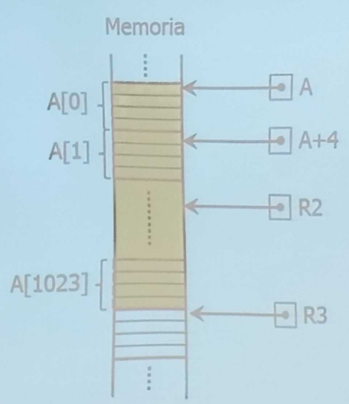
continuo dell’esempio
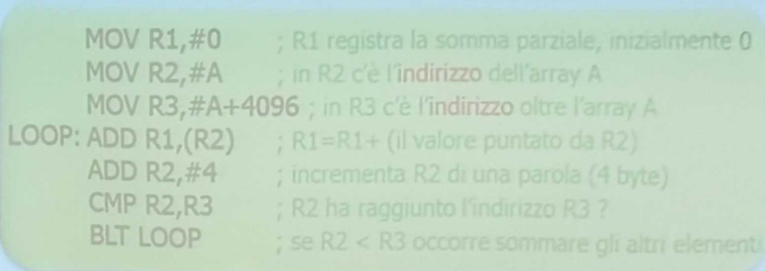 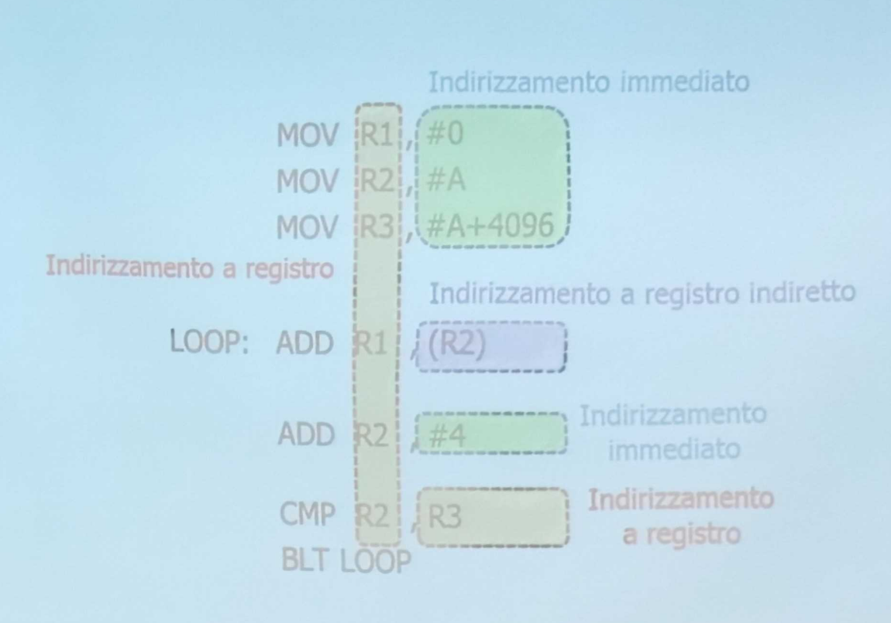
Codice auto-modificante
Così si chiamano quei codici che nel corso dell’esecuzione si modificano ad esempio con dei loop 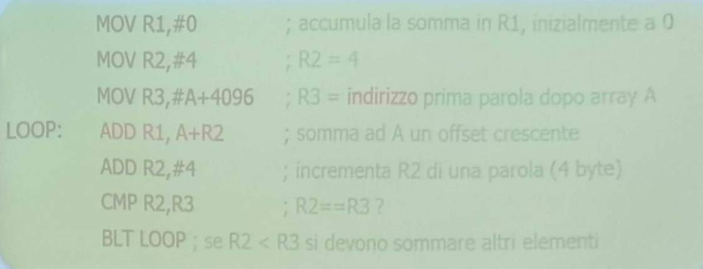 si può notare come nella fase di codice rossa ci sia un add con un registro che cambia nel tempo
Indirizzamento indicizzato
è un indirizzo dato da un indirizzo+ offset esempio: fa un and bit a bit tra gli array A e B e fa un or tra tutti i risultati
(A[0] AND B[0]) OR (A[1] AND B[1] ) OR (A[2] AND B[2]) OR...
R1 accumula l’or tra gli and R2 indica la posizione attuale dell’array R3 indica la fine ovvero 4096 quindi 1025 R4 usata come variabile d’appoggio per le AND 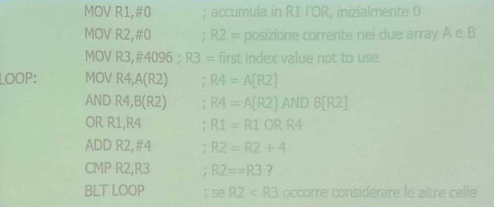
INDIRIZZAMENTO INDICIZZATO ESTESO
l’indirizzo di memoria è calcolato sommando due registri:
- uno memorizza la base
- l’altro l’indice inizializziamo R5 con A e R6 con B
MOV R4,(R2+R5) AND R4,(R2+R6)
STACK
^347d6f cosa da aggiungere: al top dello stack in una operazione aritmetica hai il secondo operando e sotto hai il primo operando
NOTAZIONE POLACCA POSTFISSA
È un sistema per scrivere in modo differente espressioni matematiche senza l’uso di parentesi il segno và dopo che hai scritto i numeri che ne riguardano 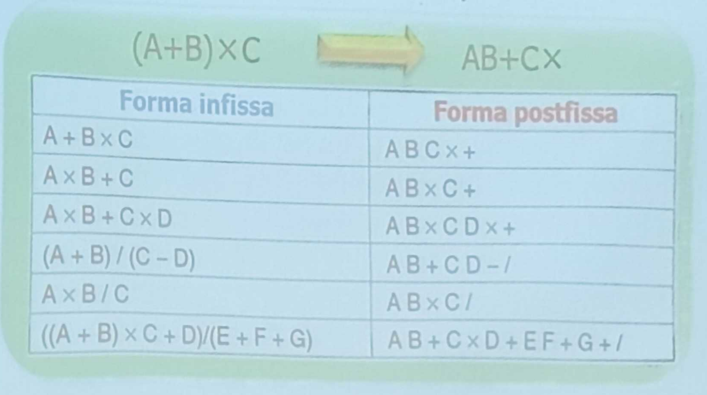
ORTOGONALITÀ
Un set di istruzioni è caratterizzato principalmente da 2 cose:
- codici operativi(OPCODE)
- modalità di indirizzamento si dice ortogonalità quando puoi usare tutte le modalità di indirizzamento viste in precedenza con tutti i codici operativi, ad esempio sul MUL devi usare per forza dei registri quindi non c’è ortogonalità su alcune architettura ad esempio quella Intel non è possibile attuarla esempio instruction set ortogonale
ISTRUZIONE ORTOGONALE
ISTRUZIONE NON ORTOGONALE
TIPI DI ISTRUZIONI
(vedi prossime pagine per approfondimenti)
- UNARIE:
- Aritmetiche: complemento, opposto, incremento, radice,…
- Bit a bit: not, shift e rotation.
- BINARIE:
- Aritmetiche e logiche
- TRASFERIMENTO DATI:
- Da registro/memoria a registro/memoria
- SELEZIONE E CONFRONTO
- ITERAZIONE
- CHIAMATA DI UNA PROCEDURA
- INPUT/OUTPUT:
- Polling, interrupt, DMA
ESEMPIO DI ISTRUZIONE UNARIA
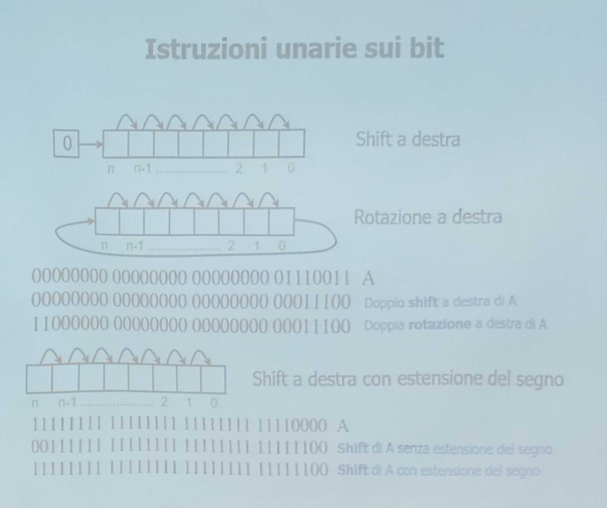 come viene applicato lo shift?? scorrere k posizioni a sinistra o destra ad un numero X comporta una potenza o una divisione
ALTRE ISTRUZIONI UNARIE:
- CLR, fa il clear di un registro
- INC, lo incrementa di 1
- NEG, lo trasforma in un numero negativo facendo il complemento a 2
- NOT, nega la variabile
- SQRT, radice quadrata
OPERAZIONI BINARIE
si dividono in:
- Logiche:
- AND, OR, XOR, NAND, NOR
- Aritmetiche:
- ADD, MULT, DIV, e altre…
ISTRUZIONI DI SELEZIONE
il modo migliore per scegliere cosa eseguire o meno è attraverso l’uso di Branch e Condizioni dove quest’ultime vengono verificate attraverso la PSW(Program Status Word) 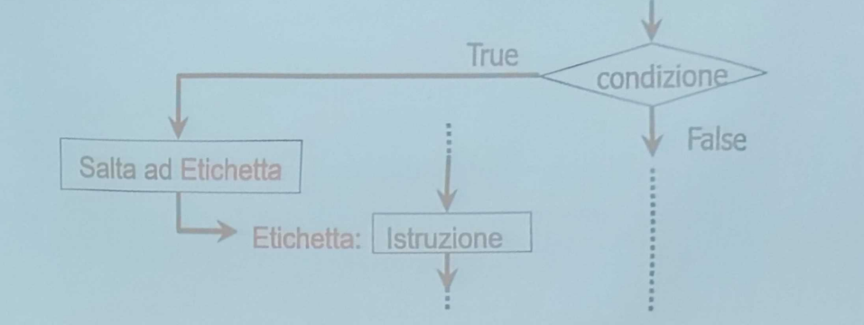
ISTRUZIONI DI TIPO ITERATIVO
Ci sono istruzioni che attraverso l’uso di etichette permettono di creare delle ripetizioni fino al verificarsi di determinate condizioni. 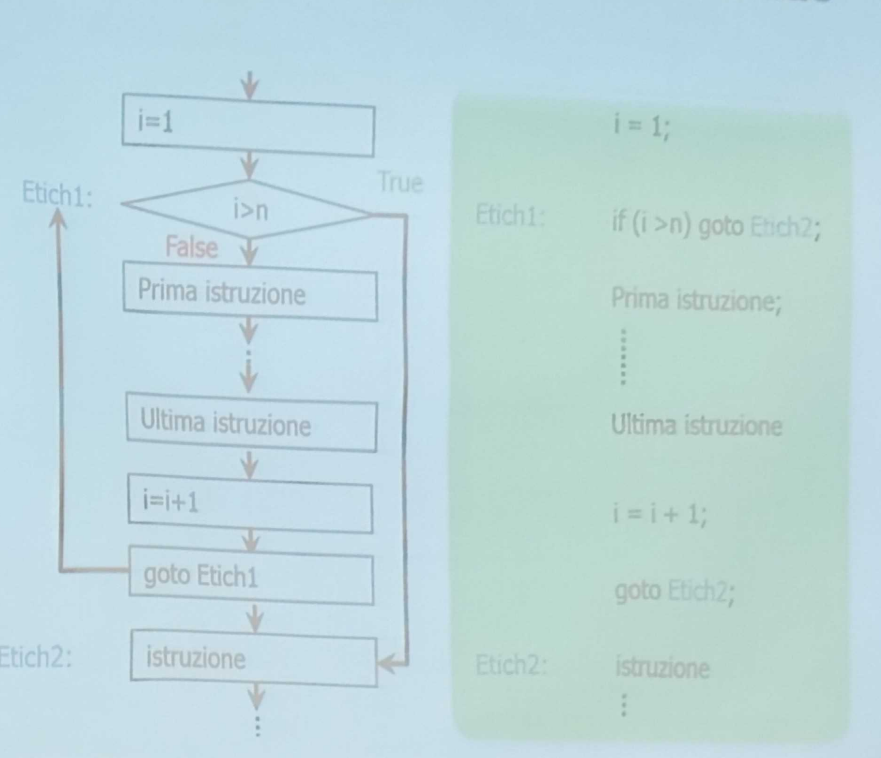
ISTRUZIONI DI I/O
Un’operazione di I/O è una operazione che consiste nel trasferimento di dati in entrata o in uscita da un dispositivo periferico ESISTONO 3 MODI DI FARE I/O:
- con busy waiting: dove la CPU periodicamente interroga i dispositivi (polling) che rimanendo in attesa(busy waiting) che il dispositivo sia pronto al trasferimento
- I/O gestito con interruzioni: La CPU riceve richieste di trasferimento dai dispositivi attraverso un interrupt
- DMA(Direct Memory Access): La CPU avvia una operazione che viene gestita dal controllore DMA
DMA
La CPU programma il controller DMA specificando:
- la dimensione che il trasferimento ha in byte
- il dispositivo che bisogna interrogare
- in quale zona di memoria bisogna prendere i dati attraverso un indirizzo Il controller gestisce l’operazione da solo Il DMA può gestire più operazioni contemporaneamente 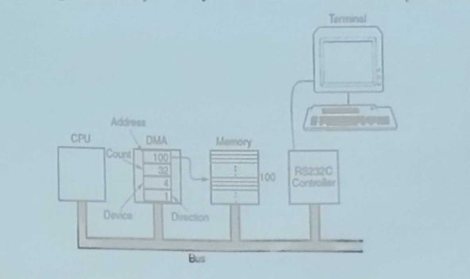
Istruzioni del Intel Core i7
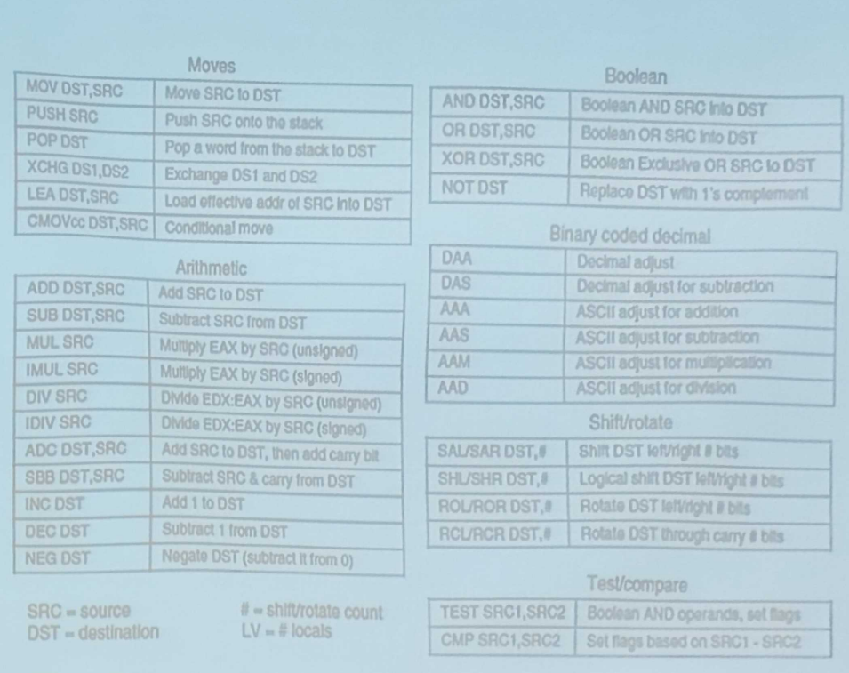 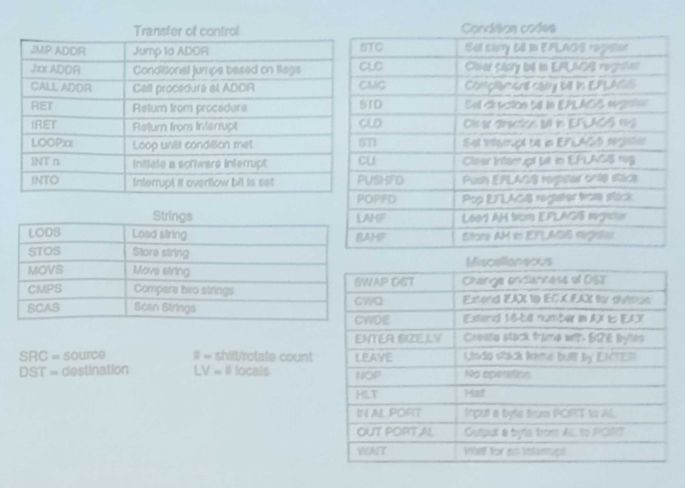
CONTROLLO DEL FLUSSO
ci sono delle tecniche che pemettono di alterare l’esecuzione di un programma come:
- salti con o senza condizione
- Chiamata di procedure
- Coroutine
- Trap
- Interrupt 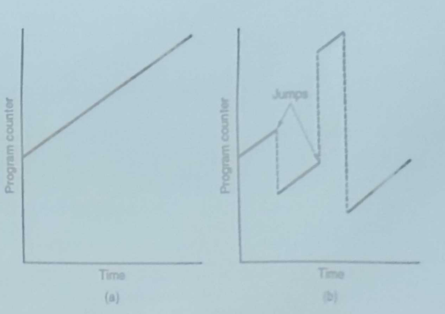
Procedure
una procedura è una serie di istruzioni(tipo una funzione) ogni volta che ne viene chiamata una viene allocato sullo stack un nuovo frame dello stack che contiene i seguenti dati:
- i parametri in entrata e uscita
- le variabili locali
- l’indirizzo di rientro (return)
- un puntatore allo stack frame del chiamante SP punta alla cima dello stack invece BP alla base del frame creato l’accesso a variabili locali e parametri avviene attraverso il BP+ un offset Quando la procedura termina il frame viene deallocato ci sono un Master e uno Slave quando si avvia una procedura, la procedura è lo slave che deve essere chiamata e il master è colui che chiama questa procedura
Trap
La trap è una procedura atuomatica che si attiva quando avviene una eccezione durante l’esecuzione di un programma la gestione della trap è affidata alla trap handler esempi di trap:
- overflow e underflow
- opcode non definito
- violazione di protezione
- divisione per zero
- tentativi di utilizzo di dispositivi inesistenti
COROUTINE
Una coroutine è una funzione speciale che può essere interrotta e ripresa. A differenza di una funzione normale che inizia dall’inizio e corre fino al suo completamento quando viene chiamata, una coroutine può iniziare la sua esecuzione, poi fermarsi (“sospendersi”) in un punto specifico, fare qualcos’altro, e poi riprendere l’esecuzione esattamente da dove si era fermata. ogni istruzione può riprendersi RESUME sono usate per simulazioni parallele su singola CPU
INTERRUPT
Sono eventi, spesso correlati con I/O, che cambiano il normale flusso di esecuzione. A differenza delle trap, sono asincroni e nascono all’esterno della CPU. La gestione delle interruzioni è affidata all’interrupt handler e la routine di gestione dell’interrupt è chiamata ISR (Interrupt Service Routine) alla fine dell’interrupt si deve riprendere quello che si stava facendo
Azioni hardware di gestione dell’interrupt
quando avviene una interrupt vengono svolte delle azioni a livello hardware che sono le seguenti:
- il controller del dispositivo genera un interrupt
- quando la CPU è pronta a ricevere l’interrupt gli invia al controller del dispositivo una acknowledge
- quando il controller vede l’acknowledge risponde con un vettore interruzione identificativo per farsi riconoscere
- la CPU lo legge e se lo salva
- la CPU salva il PC Program counter e la PSW Program status Word sullo stack
- la CPU attraverso il vettore di interruzione capisce la prima istruzione e la mette nel PC
Azioni software di gestione dell’interrupt
Dopo aver settato a livello hardware tutte le componenti per gestire l’interrupt, ora si passa all’esecuzione effettiva della routine di servizio:
- La ISR salva sullo stack i registri della CPU per poterli ripristinare
- Individua il numero esatto del device che ha generato l’interruzione tramite la lettura di opportuni registri
- Legge tutte le informazioni relative all’interruzione (es. codici di stato)
- Gestisce eventuali errori di I/O
- Esegue tutto ciò che è previsto per la gestione dell’interruzione
- SE NECESSARIO informa il device che l’interruzione è stata risolta
- Ripristina tutti i registri salvati sullo stack
- Esegue un’istruzione di RETURN FROM INTERRUPT ripristinando lo stato della CPU precedente l’interruzione
Quando ci sono multipli interrupt entra in gioco la loro priorità
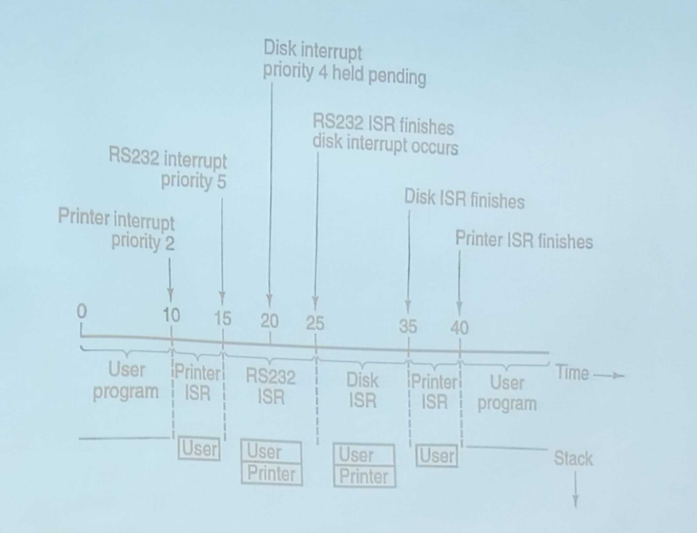
I problemi di Intel Architecture-32
- È una architettura di tipo CISC
- Ha un tipo di indirizzamento a memoria questo vuole dire che molte operazioni e istruzioni nella CPU vengono fatte direttamente sulla memoria del computer piuttosto che tra i registri interni del processore.
- Ci sono pochi registri e non regolari:
- per essere riordinate serve un hardware complesso
- il fatto che le istruzioni transitino sulla memoria crea delle dipendenze tra le istruzioni che vengono usate
- serve una Pipeline per gestire l’esecuzione di tutte le istruzioni obbligando una predizione dei salti precisa che per esserlo il codice deve essere eseguito prima che venga richiesto(esecuzione speculativa)
- i programmi sono limitati a 4GB disponendo di 32 bit
ARCHITETTURA IA-64
è una versione della IA-32 ma a 64 bit ma poco utilizzata perché il mercato server preferiva rimanere a 32 bit obiettivi della architettura in questione:
- al posto di compilare in modo approssimativo ed eseguire successivamente il codice si decise di fargli compilare il codice in modo più esaustivo per poi fargli eseguire il codice in modo più leggero
- il core i7 riordina le istruzioni, rinomina i registri e schedula le unità funzionali(tipo la ALU) per ottimizzare le performance si fecero delle implementazioni come:
- riduzione degli accessi in memoria
- scheduling delle istruzioni
- riduzione dei salti condizionati
- caricamenti speculativi
LINGUAGGIO ASSEMBLATIVO
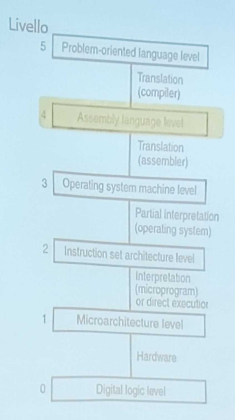 Assembler= traduttore Assembly= linguaggio usato
INTRODUZIONE
I livelli di micro e macro-architettura erano interpretati il livello assembly è interamente tradotto. Il programma colui che converte il programma sorgente in un programma destinazione è detto traduttore (colui che traduce il codice in una roba che può capire la macchina) 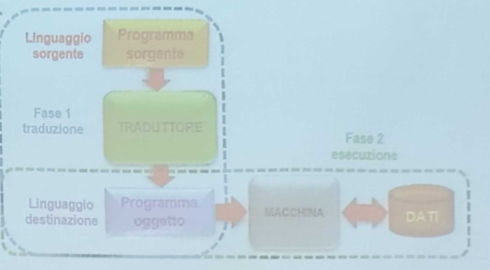
Mentre si esegue il programma oggetto(linguaggio che si avvicina alla macchina) i livelli di micro e macro architettura vengono usati per scambiare le informazioni adeguatamente
INTRODUZIONE AL LINGUAGGIO ASSEMBLATIVO
Il linguaggio sorgente è una rappresentazione simbolica del linguaggio macchina i simboli mnemonici sono tipo ADD,SUB, MUL ogni istruzione ha una corrispondenza in linguaggio macchina(binaria) il programmatore assembler ha accesso a tutte le risorse della macchina a differenza di linguaggi più ad alto livello un programma è scritto per una specifica famiglia di macchine assembler viene usato per creare programmi di ridotte dimensioni, che sfruttino la macchina al 100% e che siano veloci ci sono dei comanti che usa l’assemblatore nel codice vengono chiamati pseudoistruzioni o direttive dell’assemblatore Esempi Per definire un nuovo simbolo pari al valore di una espressione(creare una costante) si può ad esempio fare BASE EQU 1000 oppure allocare 3 byte con dei valori fissati: TABLE DB 11,23,49 oppure fare un assemblaggio con condizioni WORDSIZE EQU 32 IF WORDSIZE GT 32 WSIZE DD 64 ELSE WSIZE DD 32 ENDIF
LE MACROISTRUZIONI
consentono di creare delle istruzioni ripetibili vedi l’esempio e capisci subito 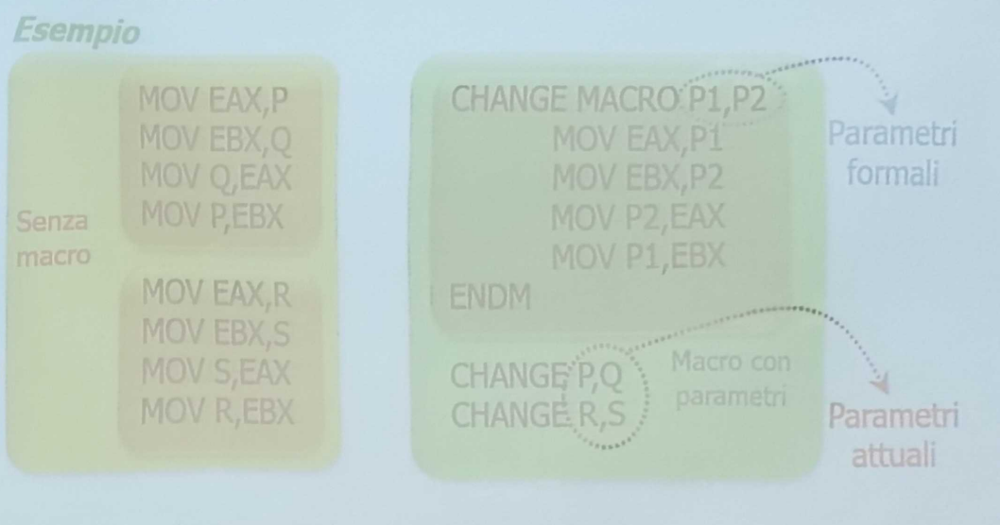
PROCESSO DI ASSEMBLAGGIO
c’è sempre il solito problema dei salti che non possono essere previsti dall’assemblatore, ci sono perciò due soluzioni
- leggere il programma due volte costruendo una tabella dei simboli, etichette e istruzioni che poi alla seconda esecuzione saranno già presenti
- leggere il programma sorgente dopo averlo convertito in un formato intermedio con una tabella intermedia salvata in memoria che poi viene precisata meglio al secondo passaggio
PRIMO PASSAGGIO
il primo passaggio costruisce la tabella dei simboli l’assembler usa la variabile ILC(instruction location counter) per memorizzare l’indirizzo dell’istruzione che sta assemblando un assembler usa 3 tabelle principalmente:
- Simboli
- Pseudo istruzioni
- codici operativi
ESEMPIO
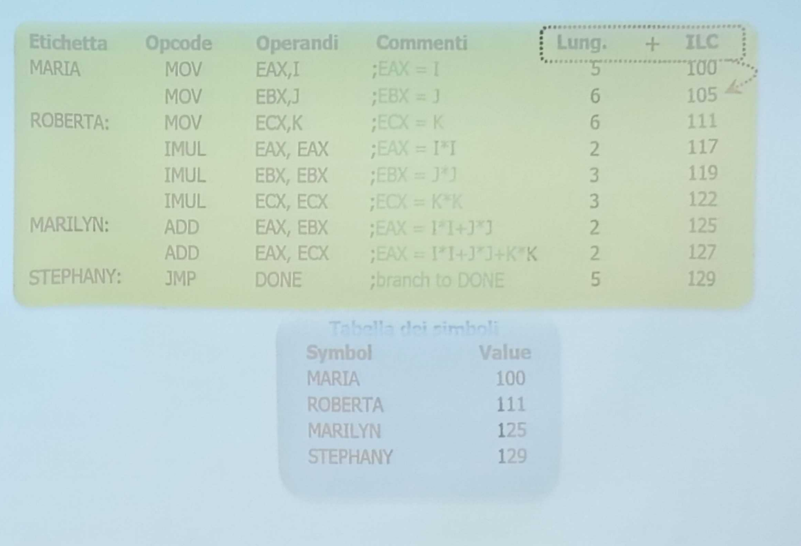
SECONDO PASSAGGIO
Durante il secondo passaggio viene generato il vero e proprio codice oggetto generando anche le informazioni che userà il linker per collegare tutte le istruzioni in un unico file dio cane!
La tabella dei simboli
la tabella dei simboli raccoglie seguendo lo standard<simbolo, valore> accessibili tramite il simbolo esistono vari algoritmi per creare questa tabella Utilizzare una struttura ordinata accedendovi in modo dinamico con costo Usare una codifica hash che mappa ogni simbolo a determinati intervalli da 0 a k-1(O(1))
LINKER E LOADER
tutti i programmi hanno più procedure e queste procedure vengono tradotte dall’assembler una alla volta salvando sul disco il risultato. l’operazione di linking prende le procedure oggetto e unendole crea il programma prima di eseguirlo occorre caricare il programma in memoria centrale serve il loader
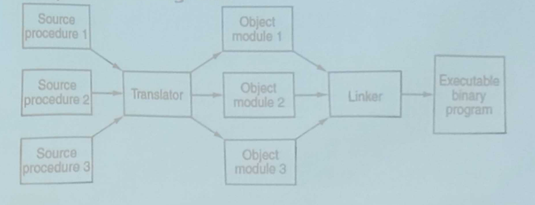
LA STRUTTURA DI UN CODICE OGGETTO
il codice oggetto è il risultato della compilazione del codice sorgente ed è diviso in più “strati”
- codice identificativo e lunghezze, contiene tutti i dati che si riferiscono a lunghezze e identificativi per trovare subito determinate linee di codice che servono per il linker per creare un programma singolo
- uno “strato” dove vengono definite le variabili PUBLIC che possono essere usate su altri file o moduli
- una lista intera di riferimenti esterni con funzioni esterne o variabili definite in altri moduli indicati con EXTERN
- ora c’è il vero e proprio codice dopo questa serie di variabili e informazioni questa parte contiene il vero e proprio codice tradotto in linguaggio macchina
- poi c’è un dizionario di rilocazione che include indirizzi di memoria che devono essere sistemati o resettati
- identificativo di fine modulo: alla fine del file oggetto viene identificata la fine del modulo con anche un checksum che è una somma usata per trovare errori durante la lettura di un modulo 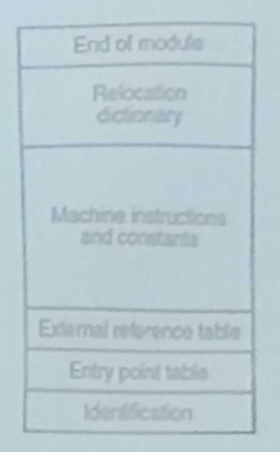